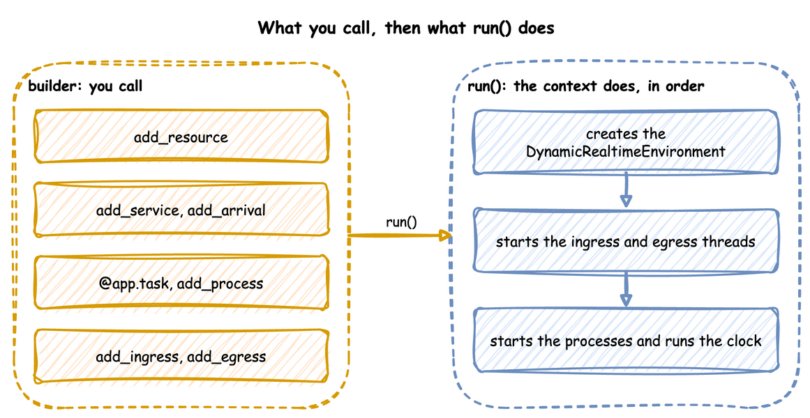

Builder API
This page writes a whole simulation as one Python file with the builder, SimulationContext: a shop that packs orders with boxes from stock, prints a label, and leaves the parcel for a courier. It builds on Ways to Write, which places the builder between a blueprint and the low-level API, and on Tasks and Processes, which describes what a task does.
The builder works in two phases. You describe the simulation with its methods and decorators, and nothing runs; run() then builds the environment and the connectors and starts the clock:

Until run(), context.env, context.spawn and context.get_resource raise RuntimeError, so they belong inside loops, tasks and processes.
Create the Context
The context names the simulation and sets its clock: factor for the pacing, random_seed for the draws, logical_start_time for the timestamps. It also takes go_live_at and warmup, which Time and Pacing describes.
| docs/snippets/pages/builder.py:clock |
|---|
| app = SimulationContext(
sim_id="Shop",
factor=0.0, # 0.0 unpaced, 1.0 real time
random_seed=42, # the same draws on every run
logical_start_time=datetime(2026, 10, 1, 9, 0), # what simulation time 0 is
)
|
Declare Resources, Stores and Containers
A resource is held while a task works; a container holds an amount and a store holds items, which tasks take and add. add_variable registers any other live value. Resources and Stores and Containers describe each.
| docs/snippets/pages/builder.py:resources |
|---|
| app.add_resource("packers", current_cap=2, max_cap=5) # 2 packers now, room for 5
app.add_container("boxes", current_cap=200, max_cap=200, level=100) # an amount
app.add_store("parcels", current_cap=20, max_cap=50) # items, waiting for a courier
app.add_variable("conveyor_speed", 1.5) # any other live value
|
Add Distributions
Each arrival and service is a distribution, with its parameters by keyword. A parameter out of range, or one the family does not take, raises ValueError here, before the run. Arrivals and Services lists the ten families.
| docs/snippets/pages/builder.py:distributions |
|---|
| app.add_arrival("orders", dist="exponential", rate=0.5) # an order every 2 s on average
app.add_arrival("couriers", dist="constant", value=10) # a courier every 10 s
app.add_service("packing", dist="triangular", low=1, mode=2, high=4)
app.add_service("labelling", dist="constant", value=0.5)
|
Write the Tasks
@app.task turns a function into a task: it publishes queued, waits for its resource and its get, publishes started, waits the service time, adds its put, and publishes what the function returns as the finished event. next names the task that follows, and the function receives upstream, entity or item when it declares them. Task Flow covers rules and weights.
| docs/snippets/pages/builder.py:tasks |
|---|
| @app.task(
service_id="packing",
resource_id="packers",
get={"container": "boxes", "amount": 1}, # one box, once it has a packer
next="print_label", # the task that follows
)
def pack_order(task_id: int):
# The value of the finished event: exactly this dictionary
return {"event_type": "order_packed"}
@app.task(service_id="labelling", put={"store": "parcels"}) # a timed step
def print_label(task_id: int, upstream):
# upstream is what pack_order handed on; the payload becomes the parcel
return {"event_type": "label_printed", "packed_by": upstream.task_id}
@app.task(get={"store": "parcels"})
def collect(task_id: int, item):
return {"event_type": "parcel_collected", "label": item["event_type"]}
|
Start Them from Arrivals
An arrival loop waits for each arrival and starts a task for the entity it returns, keyed orders-1, orders-2 and so on.
| docs/snippets/pages/builder.py:arrivals |
|---|
| @app.arrival_loop("orders")
def orders(context: SimulationContext):
task_id = 0
while True:
order = yield context.wait_for_arrival("orders") # keyed orders-1, ...
context.spawn(pack_order(task_id, entity=order))
task_id += 1
@app.arrival_loop("couriers")
def couriers(context: SimulationContext):
task_id = 0
while True:
courier = yield context.wait_for_arrival("couriers")
context.spawn(collect(task_id, entity=courier))
task_id += 1
|
Measure the Run
with_stats switches on the built-in statistics, published as telemetry; Statistics lists the levels.
| docs/snippets/pages/builder.py:stats |
|---|
| app.with_stats("typical", interval=30) # readings, counts, waits, every 30 s
|
Add a Process
add_process starts any generator when the run starts, called with the context, for anything that is not a task: here a speed that drifts.
| docs/snippets/pages/builder.py:process |
|---|
| def speed_drift(context: SimulationContext, step: float):
"""Raises the conveyor speed a little every 10 simulation seconds."""
path = "Shop.variables.conveyor_speed"
while True:
yield context.env.timeout(10.0)
speed = context.env.registry.get(path).value
context.env.registry.update(path, speed + step)
app.add_process(speed_drift, step=0.1)
|
Attach the Connectors
add_ingress brings parameter changes in, and add_egress writes records out, each with its own batching if it needs it. Ingress and Egress list the connectors.
| docs/snippets/pages/builder.py:connectors |
|---|
| app.add_ingress(LocalIngress(schedule=[(5.0, "Shop.resources.packers.current_cap", 3)]))
app.add_egress(ConsoleEgress(), batch_size=100, flush_interval=1.0)
app.with_batching(batch_size=1_000, flush_interval=5.0) # defaults for other sinks
|
LocalIngress counts its delays in wall-clock seconds. This unpaced run ends in under a second, so the change to 3 packers never lands; at factor=1.0 it lands 5 seconds into the run. A change at an exact simulation time is a scenario step, add_step(at, path=..., value=...) or add_scenario(steps), which Live Parameters describes, or a process that waits and then updates the registry, as speed_drift above does.
compile_parameters() returns the SimParameter that run() will register, to check the registry paths before a run:
| docs/snippets/pages/builder.py:compile |
|---|
| paths = app.compile_parameters() # the SimParameter that run() registers
|
Run It
| docs/snippets/pages/builder.py:run |
|---|
| if __name__ == "__main__":
logging.basicConfig(
level=logging.INFO, format="%(levelname)s [%(asctime)s] %(message)s"
)
app.run(until="2 min")
|
ConsoleEgress writes each batch of records in one INFO log call, one line per record, so the script switches logging on before it runs. Only the first line of a batch carries the logging format's prefix, such as the time and the level; the other lines are bare. The first events of the run:
| [EVT] {'sim_ts': 2.552, 'timestamp': '...', 'key': 'orders-1', 'task': 'pack_order', 'instance': 0, 'value': {'path_id': 'Shop.service.packing', 'status': 'queued'}}
[EVT] {'sim_ts': 2.552, 'timestamp': '...', 'key': 'orders-1', 'task': 'pack_order', 'instance': 0, 'value': {'path_id': 'Shop.service.packing', 'status': 'started'}}
[EVT] {'sim_ts': 2.696, 'timestamp': '...', 'key': 'orders-2', 'task': 'pack_order', 'instance': 1, 'value': {'path_id': 'Shop.service.packing', 'status': 'queued'}}
[EVT] {'sim_ts': 2.696, 'timestamp': '...', 'key': 'orders-2', 'task': 'pack_order', 'instance': 1, 'value': {'path_id': 'Shop.service.packing', 'status': 'started'}}
[EVT] {'sim_ts': 3.737, 'timestamp': '...', 'key': 'orders-3', 'task': 'pack_order', 'instance': 2, 'value': {'path_id': 'Shop.service.packing', 'status': 'queued'}}
[EVT] {'sim_ts': 4.02, 'timestamp': '...', 'key': 'orders-4', 'task': 'pack_order', 'instance': 3, 'value': {'path_id': 'Shop.service.packing', 'status': 'queued'}}
[EVT] {'sim_ts': 4.632, 'timestamp': '...', 'key': 'orders-2', 'task': 'pack_order', 'instance': 1, 'value': {'event_type': 'order_packed'}}
[EVT] {'sim_ts': 4.632, 'timestamp': '...', 'key': 'orders-2', 'task': 'print_label', 'instance': 0, 'value': {'path_id': 'Shop.service.labelling', 'status': 'started'}}
|
What It Does for You
run() takes the steps a low-level script writes by hand, in the same order, and adds these:
- A seed for every run. It makes
Sampler(seed=random_seed), and draws and logs a seed when there is none.
- Resources, stores and containers. One for each
add_resource, add_store and add_container, which context.get_resource, get_store and get_container return.
- Tasks.
@app.task publishes queued, started and the finished event with the entity key, task and instance, reports each step to the statistics, takes and adds stock, and routes to the next task with a Router.
- Entities.
context.wait_for_arrival returns an Entity with its key and attributes.
- Names with the
sim_id. context.publish(name, value) puts the sim_id in front of the name; the low-level env.publish_telemetry uses it as given.
Errors and Limits
A mistake stops the script before the clock starts. A method raises ValueError when it is called with a value it cannot take: a distribution parameter out of range or one its family does not take, an unknown queue order, a task with a resource but no service, a priority without a resource, an unknown on_interrupt, or a second task with the same name. run() then checks what each task names, before the clock or any connector starts, and raises ValueError for a resource, service, store, container, signal or task that was not added, a priority on a resource that does not queue by priority, two tasks that acquire resources in opposite orders, and a level.<name>, signal.<name>, wait.<branch> or registry["..."] that an expression reads but that does not exist.
The builder's limits are those of its tasks and its resources:
- Resources are fixed when the run starts.
run() creates every resource, store and container before the clock starts, and has no call to add one later; Dynamic Topology adds one with the low-level API.
Full Script
Full script
The complete file, which the documentation tests run:
| docs/snippets/pages/builder.py |
|---|
| """The Builder API page: a whole simulation in one Python file, step by step.
Run it with `python builder.py`: it runs unpaced for 2 simulation minutes and prints
every record to the terminal.
"""
import logging
from datetime import datetime
from desflow import ConsoleEgress, LocalIngress, SimulationContext
app = SimulationContext(
sim_id="Shop",
factor=0.0, # 0.0 unpaced, 1.0 real time
random_seed=42, # the same draws on every run
logical_start_time=datetime(2026, 10, 1, 9, 0), # what simulation time 0 is
)
app.add_resource("packers", current_cap=2, max_cap=5) # 2 packers now, room for 5
app.add_container("boxes", current_cap=200, max_cap=200, level=100) # an amount
app.add_store("parcels", current_cap=20, max_cap=50) # items, waiting for a courier
app.add_variable("conveyor_speed", 1.5) # any other live value
app.add_arrival("orders", dist="exponential", rate=0.5) # an order every 2 s on average
app.add_arrival("couriers", dist="constant", value=10) # a courier every 10 s
app.add_service("packing", dist="triangular", low=1, mode=2, high=4)
app.add_service("labelling", dist="constant", value=0.5)
@app.task(
service_id="packing",
resource_id="packers",
get={"container": "boxes", "amount": 1}, # one box, once it has a packer
next="print_label", # the task that follows
)
def pack_order(task_id: int):
# The value of the finished event: exactly this dictionary
return {"event_type": "order_packed"}
@app.task(service_id="labelling", put={"store": "parcels"}) # a timed step
def print_label(task_id: int, upstream):
# upstream is what pack_order handed on; the payload becomes the parcel
return {"event_type": "label_printed", "packed_by": upstream.task_id}
@app.task(get={"store": "parcels"})
def collect(task_id: int, item):
return {"event_type": "parcel_collected", "label": item["event_type"]}
@app.arrival_loop("orders")
def orders(context: SimulationContext):
task_id = 0
while True:
order = yield context.wait_for_arrival("orders") # keyed orders-1, ...
context.spawn(pack_order(task_id, entity=order))
task_id += 1
@app.arrival_loop("couriers")
def couriers(context: SimulationContext):
task_id = 0
while True:
courier = yield context.wait_for_arrival("couriers")
context.spawn(collect(task_id, entity=courier))
task_id += 1
app.with_stats("typical", interval=30) # readings, counts, waits, every 30 s
def speed_drift(context: SimulationContext, step: float):
"""Raises the conveyor speed a little every 10 simulation seconds."""
path = "Shop.variables.conveyor_speed"
while True:
yield context.env.timeout(10.0)
speed = context.env.registry.get(path).value
context.env.registry.update(path, speed + step)
app.add_process(speed_drift, step=0.1)
app.add_ingress(LocalIngress(schedule=[(5.0, "Shop.resources.packers.current_cap", 3)]))
app.add_egress(ConsoleEgress(), batch_size=100, flush_interval=1.0)
app.with_batching(batch_size=1_000, flush_interval=5.0) # defaults for other sinks
paths = app.compile_parameters() # the SimParameter that run() registers
if __name__ == "__main__":
logging.basicConfig(
level=logging.INFO, format="%(levelname)s [%(asctime)s] %(message)s"
)
app.run(until="2 min")
|
Low-level API writes the same kind of model by hand. A blueprint makes the same builder calls from a file, as YAML Blueprints describes.